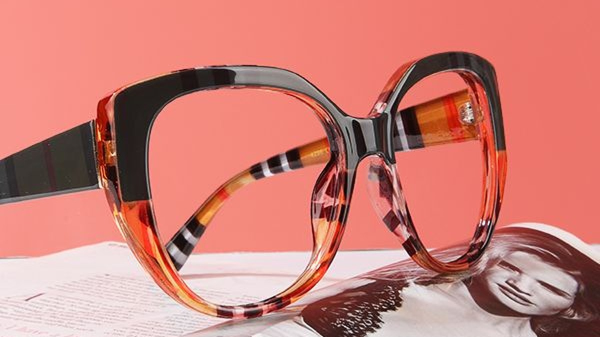

Diseño & Estilo
Guía de Estilo: Cómo elegir tus gafas de diseño en Lugo
La montura perfecta existe en relación a tu cara y tu estilo. Aprende a elegirla con criterio y descubre las tendencias de esta temporada.
Leer artículo